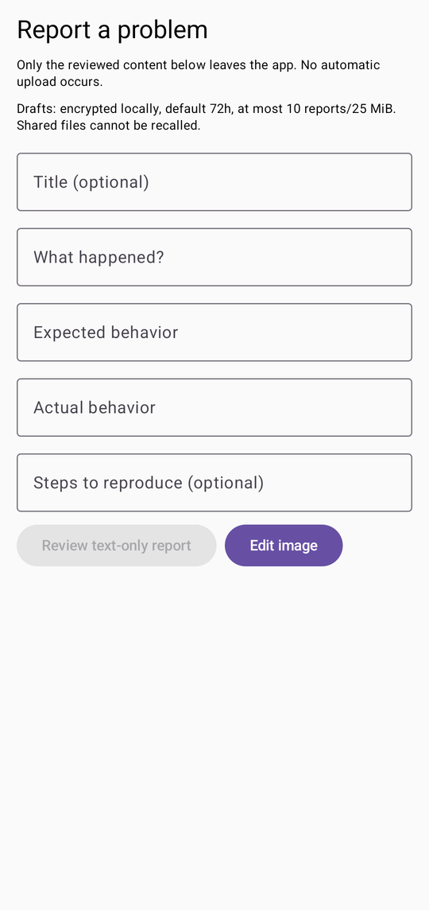
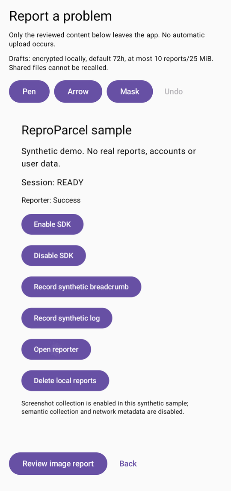
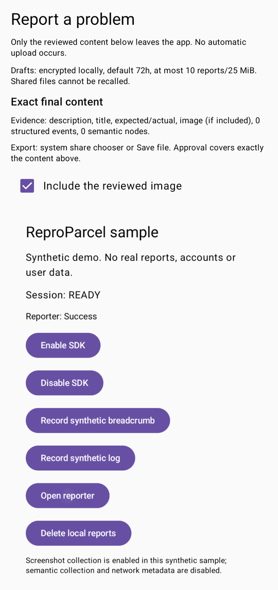
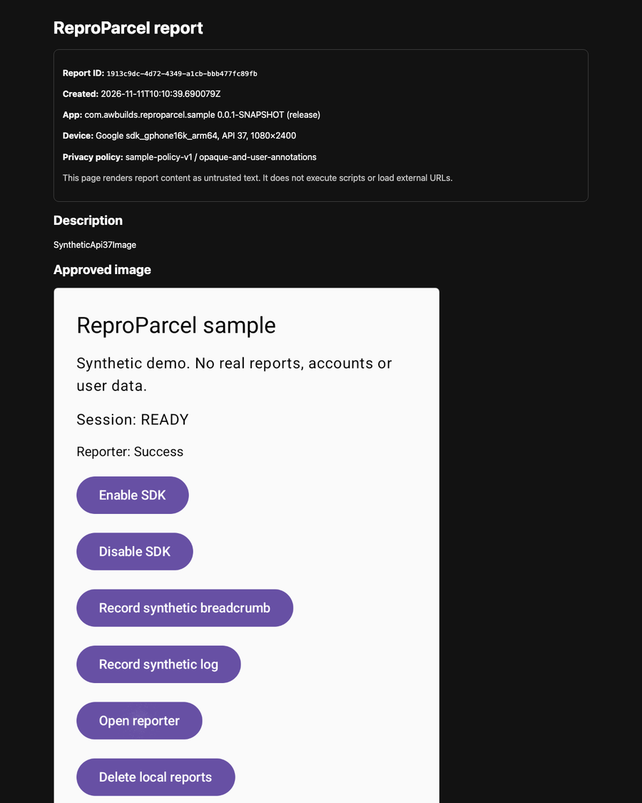

Capture
The host supplies a capture policy and an eligible surface. The reporter captures the window before its own UI opens. A protected window is omitted.
ReproParcel is a native Android reporter. It turns a user-approved screen, build provenance and bounded diagnostics into one portable parcel — reviewed on the device before it leaves.
There is no release, tag or Maven Central publication; the source candidate is on the dev branch.
SHA-256 per entry
3f9c…a71e
16-entry bound
A .reproparcel file is a bounded ZIP with a versioned manifest. Every entry is listed with a media type, uncompressed size and SHA-256. If it is not in the manifest, it is not in the parcel.
| Entry | What it carries | State |
|---|---|---|
| manifest.json | The versioned inventory: path, media type, size and checksum for every other entry. | schema v1 |
| report.json | Title, description, expected and actual behavior, reproduction steps and build provenance. | reviewed |
| events.json | Allowlisted breadcrumbs, structured logs and request method, status, timing and route template. | optional |
| semantics.json | Semantic nodes the host registered explicitly. No automatic tree extraction. | optional |
| attachments/screen.png | One sanitized image. Opaque masks are baked into the pixels before the editor opens. | masked |
Limits are enforced before writing and again before rendering: 5 MiB compressed, 10 MiB uncompressed, 16 entries, 100:1 ratio, 1600 px longest image edge.
The flow is explicit end to end. A failure is reported as an omission with a reason, never as a success.
The host supplies a capture policy and an eligible surface. The reporter captures the window before its own UI opens. A protected window is omitted.
The user edits, masks and approves the exact flattened image and text. Any content change resets approval.
The parcel is written atomically with a manifest and a checksum per entry. A serialization failure never leaves a partial file.
The desktop tool validates, inspects and renders offline. A read-only MCP server exposes five report tools — no write, execute or upload.
Synthetic sample data only. The shipped reporter marks its own window secure, so these plates come from a documentation build of the same UI.




The reporter records a report only when the host has enabled a policy and the user has opened it. It never captures , , or . A protected window is omitted rather than captured.
This is the whole record: one text payload, one image, optional events and semantics. If a surface is not eligible, the report still exports — with a typed omission instead of a picture.
Example excerpt. Hover or focus a bar to see the withheld category. When capture is not allowed, the parcel carries a typed reason: SECURE_WINDOW, UNSUPPORTED_SURFACE or SIZE_EXCEEDED.
Collection starts disabled. A host capture policy names the eligible surfaces; the SDK checks the secure flag before and after copy and treats PixelCopy success as insufficient proof.
Release benchmark variant, physical Android 12 device. These are local measurements with limits, not a universal performance guarantee.
| Measurement | Result |
|---|---|
| SDK initialization, p95 | 1.55 ms |
| Capture latency, p95 | 211 ms |
| Capture peak memory | 15.1 MB |
| Trigger to composer, p95 | 289 ms |
| Paired jank, 5 × ~1,050 frames | +0.06 pp deadline miss |
| APK delta versus baseline | +0.40 MiB |
Capture and collector timings use debug instrumentation. A current physical device, physical API 26/30 rows and a longer thermal soak remain open. Method and caveats.
The final traceability audit records 231 PASS and 43 BLOCKED. Blocked rows name an exact next action; they are not counted as done.
The site mirrors the repository documents. When they disagree, the repository is authoritative.
The schema, limits, privacy boundaries and unrun gates are documented. Nothing here hides behind a product page.
Apache-2.0 · No analytics on this site · Pre-release